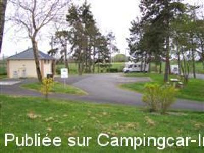
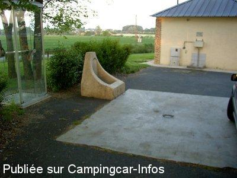
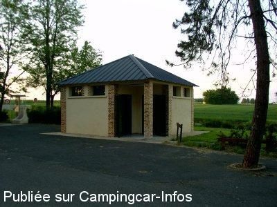
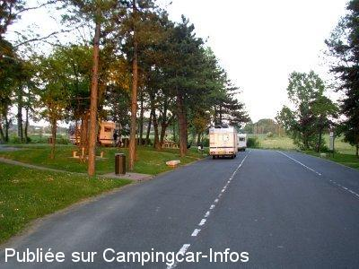

ASN = Aire de services avec stationnement nuit possible de :
NEUVY PAILLOUX
(N° 344)
Accès/adresse :
N151
Aire de repos Les Gloux
36100 NEUVY PAILLOUX
Aire de repos Les Gloux
36100 NEUVY PAILLOUX
Latitude : (Nord) 46.88278° Décimaux ou 46° 52′ 58′′
Longitude : (Est) 1.83682° Décimaux ou 1° 50′ 12′′
Tarif : Gratuit
Services :


Possibilité repas
Autres informations :
Aire ouverte toute l'année
La Mairie déconseille le stationnement de nuit et suggère la place du village
Tel +33(0)254 495 224

Le 17/04/2007 par famille Sicard

Le 24/05/2004 par Bruno M.

Le 24/05/2004 par Bruno M.

Le 24/05/2004 par Bruno M.
de
papyalain
le 30/07/2007 :
ideale pour une escale de jour , à eviter la nuit , trop isolée et frequentation douteuse
ideale pour une escale de jour , à eviter la nuit , trop isolée et frequentation douteuse
de
famille Sicard
le 17/04/2007 :
C'est vrai que cette aire est très bien conçue mais manifestement mal fréquentée en regard des inscriptions obscènes dans les WC et des rotations douteuses de véhicules toute la soirée. Ceci dit, nous n'avons rien à déplorer excepté la proximité de la nationale bruyante mais nous étions plusieurs et donc assez sereins. Ou bien serait-ce une simple impression négative ?
C'est vrai que cette aire est très bien conçue mais manifestement mal fréquentée en regard des inscriptions obscènes dans les WC et des rotations douteuses de véhicules toute la soirée. Ceci dit, nous n'avons rien à déplorer excepté la proximité de la nationale bruyante mais nous étions plusieurs et donc assez sereins. Ou bien serait-ce une simple impression négative ?
de
Bruno81
le 08/11/2003 :
Aire fonctionnelle au 26/10/2003.
Nous nous étions garés sur le parking fort agréable (aire de pique-nique aménagée) à distance du bloc toilettes.
Quelques allées et venues de voitures dans la soirée mais qui n'ont pas duré. Pas de sentiment de particulière insécurité. Nuit calme et excellente.
Seul point négatif : la route nationale (Chateauroux-Issoudun) très fréquentée et donc du bruit tard en soirée et tôt le matin.
Aire fonctionnelle au 26/10/2003.
Nous nous étions garés sur le parking fort agréable (aire de pique-nique aménagée) à distance du bloc toilettes.
Quelques allées et venues de voitures dans la soirée mais qui n'ont pas duré. Pas de sentiment de particulière insécurité. Nuit calme et excellente.
Seul point négatif : la route nationale (Chateauroux-Issoudun) très fréquentée et donc du bruit tard en soirée et tôt le matin.
de
CHANONAT
le 08/09/2003 :
C'est vrai que cette aire n'est pas sûre. Nous sommes allés comme on nous l'à recommandé derrière la salle des fêtes de neuvy-pailloux, pas de services, mais nuit passée en aout 2003 très tranquille.
C'est vrai que cette aire n'est pas sûre. Nous sommes allés comme on nous l'à recommandé derrière la salle des fêtes de neuvy-pailloux, pas de services, mais nuit passée en aout 2003 très tranquille.
de
CHANONAT
le 06/09/2003 :
Je suis passé en aout 2003 sur l'aire de CHATEAUROUX, avenue du parc des loisirs, bien pour les services mais impossible d'y rester la nuit car trop étroit et bruyant en raison d'une fête toute proche.
Je suis passé en aout 2003 sur l'aire de CHATEAUROUX, avenue du parc des loisirs, bien pour les services mais impossible d'y rester la nuit car trop étroit et bruyant en raison d'une fête toute proche.
de
André BENARD
le 02/04/2001 :
L'aire se trouve en pleine nature à 2 km du village et m'a été déconseillée par un camping-cariste de la commune. Le parking derrière la salle des fêtes est beaucoup plus sûr. Il y a possibilité de repas seulement au cours de l'été quand le marchand de frites est en place.
L'aire se trouve en pleine nature à 2 km du village et m'a été déconseillée par un camping-cariste de la commune. Le parking derrière la salle des fêtes est beaucoup plus sûr. Il y a possibilité de repas seulement au cours de l'été quand le marchand de frites est en place.